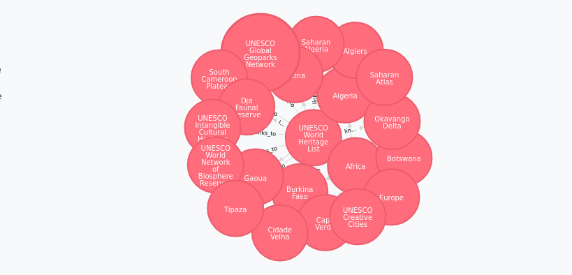

Part 1: Intro
This is part one of a three part series. In this part, I'll write about using Elixir to parse Wikivoyage data dumps and push them into the Neo4j graph database. I call this project rapidmind. 1 If you're most interested in the resulting data structure and how it can be interrogated, you can leave this part and move directly to part 2.
Motivation
Initially I intended to parse only wikipedia dump files, thinking that it would be very interesting to try and construct graph queries that could infer stuff like "trigonometry is a prerequisite concept of calculus" based on page linkages. I still might look into this at some point, but after I realized that more or less the same unmodified parsing code could be used with other MediaWiki data dumps I had other ideas.
Maybe the best MediaWiki site to throw into a graph database is the tree of life the friendly folks at [WikiSpecies][https://species.wikimedia.org/wiki/Main_Page] are building. This project idea is tempting but I'm setting it aside for time being.
Instead for the purposes of this experiment I'll be parsing WikiVoyage data dumps, which is perhaps not so well-known. WikiVoyage is a MediaWiki project that is building a open travel guide, and I'm going to run with it over other stuff because this dataset should be large enough to be interesting yet quite tractable. Besides that, I am very interested in travel2 and geography. Being a frequent user of WikiVoyage myself, I expected that the inter-page linking structures embedded in content there would be in a kind of information theoretical sweet spot, that is to say less random than what I'd find parsing Wikipedia, but less structured than what I'd find trying to parse WikiSpecies.

The Players
There are different graph databases out there, but without a lot of compare-and-contrast I decided to go with neo4j simply because the community surrounding it is active and growing (and naturally it has all the obligatory WebScale hype). It seems like a good place to start experimenting, but I'm not yet in a position to advocate or condemn it compared with anything else.
For writing GraphDB queries I'll be using Cypher, the standard weapon of choice of Neo4j. Other query languages are out there, and I can't condemn or condone them since I don't know enough. In particular the extent to which Cypher and OpenCypher are truly compatible is mysterious to me and knowing more about this would be really important for production use-cases.. but none of this really matters for a toy project.
On the Elixir side of things, communication with Neo4j is done using a combination of callisto and neo4j_sips. For parsing XML I'm using erlsom which is fairly arcane and pretty awkward to use. I'm very much indebted to this post for providing a complete working example. All my data-dump parsing code itself will be used here but not discussed much, and that part is basically just a black box for the purposes of this writeup.
Setting up Neo4j
Unless you've already got it up and running, you'll want to install neo4j. It'll require about 2G RAM at minimum and a java installation.. this can be somewhat of a pain in the ass. You can accomplish the installation however you like, but I opted not to clutter up my primary development environment. There is official support for docker which you might like to look into.
Personally my standard development environment is an Ubuntu guest on an OSX host, using virtualbox. Only my guests run docker, since I'm fastidious about keeping the host OS as pristine as possible. Given that I suspected that using docker in the guest for "serious data" might have similarly serious IO bottlenecks (not that I've done real benchmarks). Thus I opted for a vagrant based approach in a second guest, but your approach may vary.
I suggest spinning up a vagrant box with at least 2G of ram, and using this ansible role to provision it. This gist provides a complete ansible/vagrant/neo4j recipe with instructions. Therein the guest neo4j server will be accessible from port 7474 on the host. If you're allergic to ansible then here is another (untested) vagrant/neo4j recipe that just uses shell scripts.
Regardless of how you get it setup, you'll want to be sure that you can access the fresh neo4j server once it's provisioned.
Confirm that you can connect to neo:
$ curl http://localhost:7474
{
"management" : "http://neo_host_ip:7474/db/manage/",
"data" : "http://neo_host_ip:7474/db/data/"
}
If you cannot connect to neo, then make sure the server is listening on 0.0.0.0 instead of 127.0.0.1 (this setting is inside /etc/neo4j/neo4j-server.properties). 3
Got Data?
A direct link to the latest XML datadump up the English WikiVoyage content is always here. You'll need a copy of this before proceeding to parsing in the next step
$ wget https://dumps.wikimedia.org/enwikivoyage/latest/enwikivoyage-latest-pages-meta-current.xml.bz2
$ bunzip2 enwikivoyage-latest-pages-meta-current.xml.bz2
$ mv enwikivoyage-latest-pages-meta-current.xml wikivoyage.xml
Clone & Configure
In this writeup I won't go into depth much about the code itself.. just how to use it. All this assumes of course that you already have Elixir installed. Afterwards, clone my elixir project repository and install the dependencies with mix
$ git clone https://github.com/mattvonrocketstein/rapidmind.git
$ cd rapidmind
$ mix deps.get
$ mix deps.compile
Edit the connection string for the neo4j server inside config/config.exs, changing the URL line to match your neo4j server.
url: "http://neo4j_server:7474",
For me, I have two Vagrant guests: one for Elixir development and one for the Neo4j server. But since the Neo4j guest is port-forwarded back to the host, my development guest is configured to look for Neo4j on the host.
url: "http://10.0.2.2:7474",
Parsing Data
After grabbing to code and the data-dump, you should now be able to run the parser against the XML. In terms of what is populated in the graph DB, this will create "WikiPage" nodes and "links_to" relationships to capture4 the inter-wiki links from page bodies.
$ mix load wikivoyage.xml
16 outgoing links for Aba (prefecture)
extracting linked pages for `Aba as Sa'ud`
1 outgoing links for Aba as Sa'ud
extracting linked pages for `Abacos`
3 outgoing links for Abacos
extracting linked pages for `Abadan`
7 outgoing links for Abadan
extracting linked pages for `Abadeh`
1 outgoing links for Abadeh
Loading the entire wikidump into Neo4j can take many hours, it all depends on your virtual machine resources. Loading the inter-wiki links will work with everything from wikipedia to wiktionary, etc
Loading extra relationships (things other than page links) is possible. There's the mix partof [dumpfile.xml] command, which will add "part_of" relationships to Neo4j. This particular relationship is more specific to wikivoyage (as in California is part_of the UnitedStates), whereas simply extracting the link structure will work for wikipedia/wiktionary, etc.
$ mix partof wikivoyage.xml
Southeastern Kansas -contains-> Baxter Springs
Eastern Dominican Republic -contains-> Bayahibe
Gobi -contains-> Bayanhongor
Penang -contains-> Bayan Lepas
Western Inner Mongolia -contains-> Bayan Nur
Nebraska Panhandle -contains-> Bayard
Other Commands
Other commands interacting with the graph database in one way or another are provided for in this project via elixir's mix tool.
Updating just one Node is a frequent task if you want to parse it into the graph database without parsing all of the data-dump. Use mix update <page_title> for this. The entire data-dump still has to be scanned, which is time consuming, but only the data for page-title you specified will be sent to Neo4j so this is much, much faster than running mix load. You can use this command judiciously if you want to load only small connected subsets of the wikivoyage graph. Example output is below:
$ mix update "Aachen" ./wikivoyage.xml
skipping 3Days 2Night Chiang Mai to Chiang Rai
skipping 3 Days in Block Island
skipping 4 Days Mae Hong Son Loop
skipping 4 June 2004
skipping 7 2
skipping 7+2
skipping 88 Temple Pilgrimage
extracting linked pages for `Aachen`
Basic statistics about the graph database can be seen with the mix stats command. Example output looks something like this:
$ mix stats
Node Count:
55545
Top nodes by relationship-count:
UNESCO World Heritage List (1489)
United States of America (1454)
Canada (911)
India (795)
California (774)
To purge Neo4j without destroying the whole Neo4j virtual machine you can use mix wipedb. This will also (re)set Neo4j integrity constraints on the empty database.
$ mix wipedb
1961 items left in database
1892 items left in database
1443 items left in database
1212 items left in database
1127 items left in database
1048 items left in database
779 items left in database
database is empty. adding indexes
["CREATE CONSTRAINT ON (wp:WikiPage) ASSERT wp.title IS UNIQUE", []]
["CREATE CONSTRAINT ON (wp:WikiPage) ASSERT wp.page_id IS UNIQUE", []]
Running cypher queries directly against the Neo4j server is also possible using the mix cypher command. See the example below:
$ mix cypher "MATCH n WHERE n.title='Yosemite' RETURN n"
{:ok, [%{"n" => %{"page_id" => 40124, "title" => "Yosemite"}}]}
Exploring the data
So, what we have at this point is a simple but reasonably large graph, where nodes are WikiVoyage pages, and we have 2 kinds of inter-node relationships specified. What the hell is this data structure? In short we have a good model for describing how the website connects to itself. Because the website itself is basically trying to describe the world, we sort of have model for the world too even if it's shall we say low-res and second order. What kinds of questions can we ask and answer with this model, and how can we curate and improve its accuracy? The data diving begins in the continuation of this series
- Why "rapidmind"? Just because whenever I search for elixir-related content on google expecting to find programming language stuff, I find some stuff about a WoW artifact called rapidmind. Hopefully this will return the favor eventually and screw up some of the search results for those guys =P ↩
- You can check out my (somewhat neglected) travel blog here ↩
- Other modifications you might like to make: increase the ulimit in the default init script at
/etc/init.d/neo4j-service. ↩ - Link relationships are parsed from page bodies with regexes looking for "[[" and "]]" ↩